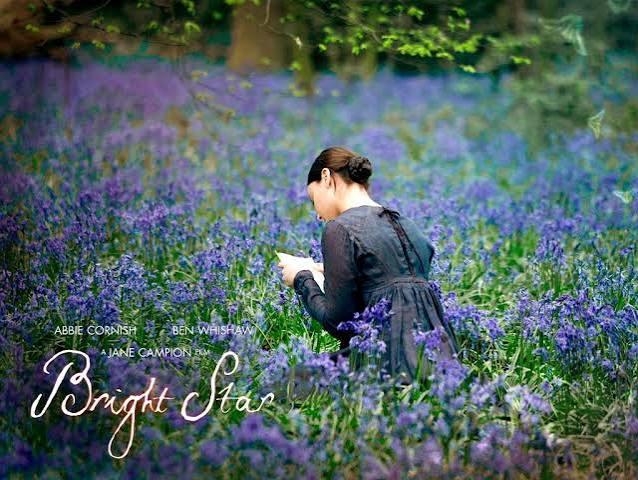

Başrollerni Abbie Cornish ve Ben Whishaw'ın paylaştığı yönetmenin Andrew Motion'la ortak senaryosunu yazdığı bu film İngiliz şair John Keats'in hayatından bir kesit sunuyor. Duygusal şiiirleriyle ünlü olan şairin komşusuyla olan aşk hayatı dramatik bir biçimde işlenmiş. Fanny Brawne adındaki bu kadına yazdığı mektuplardan yola çıkılarak onun gözünden anlatılan bu film yasın verdiği hüznü seyirciye muhteşem geçirmektedir.

Bright Star(2009) Jane Campion yönetmenliğinde çekilmiş romantik bir filmdir.
Romantik bir film olmasına rağmen karakterlerin birbirini tercih etmesi ve ayrılıkları mantık çerçevesinde işlenmiş. Buna rağmen yaşadıkları duygusal yıkım izleyiciye olduça iyi aktarılıyor çünkü acının da mantıklı bir gerekçesi vardır.Dönemin romantizm akımından hoşlananlar ve William Turner tablolarını sevenler tercih edebilir. Campion'ın filmlerinde dokunsal hisler harekete geçer.Supreme melankolik bir anlatım hakimdir. Görseller onirik olduğundan izleyici hüzünlü olmaz ama bir burukluk hisseder.Zerafet ve ağıt bir aradadır. Sonbaharda ya da bulutlu bir bahar gününde derdiniz yokken dert sahibi gibi rollenmek isterseniz bu film iyi bir tercih olabilir sizin için.
Jane Cmpion filmlerinden favorilerim bunlar incelemek isterseniz...
Keyifli seyirler...İzlemede kalın...